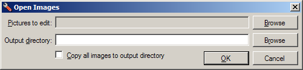
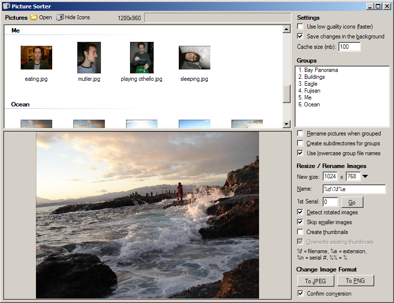

Open Images Form

The Open Images form will be displayed when the application first opens, and whenever you click the "Open" button.
On this form, you select the images to edit and the directory where the images should be saved. The output directory
can be the directory where the images already are, and in fact this is the default.
If you check the "Copy all images to output directory" box, all selected images will be copied to the output
directory after they are loaded. This has no effect if the images are already in the output directory. If the box is
unchecked and images are not in the output directory, then only images that are grouped or edited will be moved into
the output directory. Unedited images will be left where they are.
Main Form

Toolbar
At the top-left, near the word "Pictures", is the toolbar. There are two buttons:
- Open - This button allows you to load another set of pictures. You can also activate
this by pressing Ctrl-O.
- Show/Hide Icons - This button shows or hides the iconts in the image list. Hiding the icons allows you to see
more images at once.
To the right of the toolbar is a status area and progress bar.
Image list
Below the toolbar is the image list, which displays all of the images loaded into the program. You can show or hide
the icons by clicking the "Show Icons" or "Hide Icons" button on the toolbar. Selecting a single image in the list
will display it in the preview area below, and show the image size in the status area. When you are using the image
list, you can use the following keyboard commands:
- # (a number) - Assigns the selected images to the group with the given number.
- Ctrl-# (Ctrl-Number) - Assigns the selected images to the group with the given number, plus 10.
- Alt-# (Alt-Number) - Selects the images in the group with the given number. If Shift is also pressed
(ie, Alt-Shift-#), the images will be added to the current selection, rather than replacing it. If Ctrl is also
pressed (ie, Alt-Ctrl-#), the group with the given number, plus 10, will be used.
- Minus - The minus key removes the selected images from their current group.
- Alt-Minus - Selects the images that are not in a group. If Shift is also pressed (ie, Alt-Shift-Minus), the
images will be added to the current selection, rather than replacing it.
- F2 - Renames the selected image(s). If multiple images are selected, you will be prompted to enter the base
name (eg, "running"), and the images will be named in a series (eg, "running1", "running2", etc).
- Delete - Deletes the selected images. If Shift is also pressed (ie, Shift-Delete), you will not be prompted to
confirm the deletion.
- Alt-Left - Rotates the selected images 90 degrees counterclockwise.
- Alt-Right - Rotates the selected images 90 degrees clockwise.
- Alt-Down - Rotates the selected images 180 degrees.
- Ctrl-A - Selects all images in the list.
Settings
In the top-right area of the screen are a few controls that allow you to configure how the program works:
- Use low quality icons - If this box is checked, the icons created for the images will be of lower quality, but
will be created more quickly. This speeds up the display of the icons after the images are loaded. This box only
affects icons that have not yet been created. It will not cause existing icons to be recreated.
- Save changes in the background - If this box is checked, changed images and their thumbnails will be written to
disk in the background. This allows you to continue working during some long-running operations, but may cause
occasional stuttering in the user interface. If the box is unchecked, images are saved as soon as they are
changed. This ensures that the user interface will not stutter, at the expense of having to wait for files to be
saved before you can continue working.
- Cache size - This box allows you to set the size of the image cache. The program will keep up to the given
amount of image data in memory, so that the associated images don't need to be reloaded from their files. Note
that the image currently being edited will be kept in memory even if it exceeds the cache size. When the cache
gets full, images in it will be saved to disk if they've changed, and removed. A larger cache makes the
"Save changes in the background" option more effective. The cache size can be from 0 to 1024 megabytes.
Groups
Below the settings area is a section that allows you to manage groups of pictures. The box immediately below the
"Groups" text will list the groups you have created. To create a new group, press F3 or right-click in the box and
choose "New Group". You can rename a group by selecting it and pressing F2, and you can delete a group by pressing
delete. These options are also available from the menu that appears when you right-click on a group in the list.
After you have created one or more groups, you can assign images to them. You can do this by selecting images and
pressing the group's shortcut key, or by right-clicking the group and choosing "Assign Images to Group". The groups'
shortcut keys are displayed to the left of their names. For instance, a group called "Barcelona" may be displayed
as "1. Barcelona". This means that you can press the '1' key to assign the selected images to that group. Groups
after the first 10 will have a shortcut key prefixed with the letter 'C' (eg, "C2. Barcelona"). This means that you
can press Ctrl-2 to assign to the selected images to that group. Groups after the first 20 have no shortcut keys,
and can only be assigned using the right-click menu.
Below the groups list are several checkboxes to configure how groups behave:
- Rename pictures when grouped - If checked, images assigned to the group will be renamed to the name of the
group plus a number. For instance, if the group is called "Barcelona", the images assigned to it will be named
"Barcelona1", "Barcelona2", etc.
- Create subdirectories for groups - If checked, images assigned to the group will be placed in a subdirectory
named after the group. For instance, if the group is called "Barcelona", images will be placed in a folder called
"Barcelona". The folder will be placed in the output directory.
- Use lowercase group file names - If checked, group names will be converted to lowercase when used as part of
a file name. For instance, if the group is called "Barcelona", images assigned to the group would be called
"barcelona1", "barcelona2", etc. instead of "Barcelona1", "Barcelona2", etc.
Resize / Rename Images
Below the groups area is a section that allows you to perform bulk renaming and resizing, as well as create
thumbnails of images.
The "New size" boxes allow you to specify the desired size of the images or thumbnails. Images will be scaled to fit
within the given size while keeping their existing aspect ratio. To the right of the boxes is an arrow that, if
clicked, will present a menu of common sizes.
- If a size is entered into both boxes, images will be scaled so that both dimensions fit within the given size.
If "Skip smaller images" is unchecked, at least one dimension of the new image will be exactly equal to the
size given.
- If only one dimension is set and the other is blank or zero, images will be scaled to fit within the given
size, and the other dimension will scale up or down to maintain the aspect ratio. If "Skip smaller images" is
unchecked, the size of the new image will be exactly equal to the given size.
- If both boxes are blank or zero, images will not be resized and thumbnails cannot be created. This may be
useful if you only want to perform a bulk rename.
The "Name" box allows you to enter a naming scheme for the images. You can add a directory name to the beginning
of the naming scheme to place the images in a subdirectory of the output directory. The following tokens will be
replaced within the naming scheme to generate the final filename:
- %f - Replaced with the name of the file, without the extension.
- %e - Replaced with the file extension, including the leading period.
- %n - Replaced with a serial number that is incremented for each file, without the extension.
- %% - Replaced with a percentage sign.
The "1st Serial" box allows you to set the first serial number, if you use %n in your naming scheme. Below
this are four checkboxes to control the resize/rename process:
- Detect rotated images - If checked, the program will attempt to detect images that have been rotated. When a
rotated image is resized, the sizes that you entered in the "New size" box will also be rotated, so that you can
easily downsize images by the same factor regardless of their orientation. This option will only be available if
you enter sizes for both dimensions. It works by detecting images that have an aspect ratio equal to the inverse
of the aspect ratio you entered.
- Skip smaller images - If checked, images smaller than the size you entered will not be resized. This is
useful because increasing the size of an image merely results in it becoming blurry.
- Create thumbnails - This is an important option. If checked, the program will create thumbnails for the images
rather than resizing the images themselves. The thumbnails will remain attached to the images; if an image is
renamed, deleted, or assigned to a group, the thumbnail will be similarly affected.
- Overwrite existing thumbnails - If checked, this option will cause any thumbnails created to overwriting
existing thumbnails with the same name.
When you are ready to create thumbnails, or resize or rename images, click "Go". This will affect all selected
images, or if no images are selected, it will affect every image.
Change Image Format
In the bottom-right section of the screen are options to change the format of images. Simply click "To JPEG" or
"To PNG" to convert images to JPEG or PNG format. The buttons will affect all selected images, or if no images are
selected, they will affect every image. If the "Confirm conversion" checkbox is unchecked, the program will not ask
for confirmation before converting images.